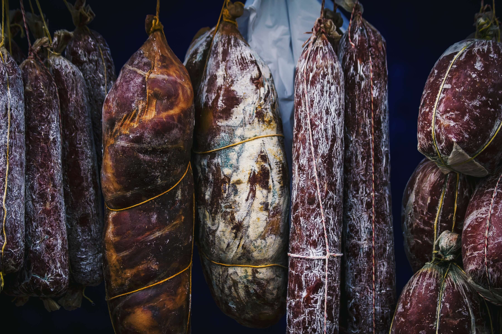
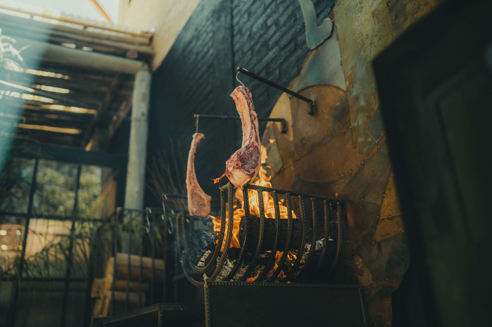

|
  |
|

 |
Bienvenidos a la Cocina Argentina |
|
Sobre la Cocina Argentina
Sumérgete en la rica y diversa tradición culinaria de Argentina, una nación que fusiona influencias indígenas, europeas y latinoamericanas en platos que despiertan los sentidos. La cocina argentina es un reflejo de su extenso paisaje, desde las vastas llanuras de la Pampa hasta las regiones montañosas. En este sitio, te invitamos a explorar los sabores, aromas y técnicas que hacen que la comida argentina sea tan única y apreciada en todo el mundo.
Descubre Platos Representativos
Adéntrate en un viaje gastronómico a través de los platos más representativos de Argentina. Desde las emblemáticas empanadas, que ofrecen un festín de sabores en cada bocado, hasta el ritual del asado, donde la carne es el corazón de la celebración. Cada plato cuenta una historia de tradición, historia y pasión que ha sido transmitida de generación en generación.
Explora Ingredientes Emblemáticos
Los ingredientes son la base de cualquier cocina, y Argentina no es la excepción. Explora la paleta de sabores que define la gastronomía argentina: la carne de res de calidad, una pieza fundamental que se asa a la perfección en las parrillas argentinas; la cebolla, que agrega profundidad y sabor a muchas recetas tradicionales; el chimichurri, una salsa vibrante que realza cada plato; el maíz, que se encuentra en muchas preparaciones auténticas; y la yerba mate, una infusión que va más allá de ser una bebida, es un símbolo de compartir y conectar.
Te invitamos a explorar y experimentar la cocina argentina en toda su gloria. Desde las parrillas humeantes de las esquinas de Buenos Aires hasta las cocinas hogareñas que mantienen viva la tradición, descubrirás un mundo de sabores que reflejan la pasión y la hospitalidad del pueblo argentino.
¡Buen provecho y bienvenidos a la mesa de Argentina!